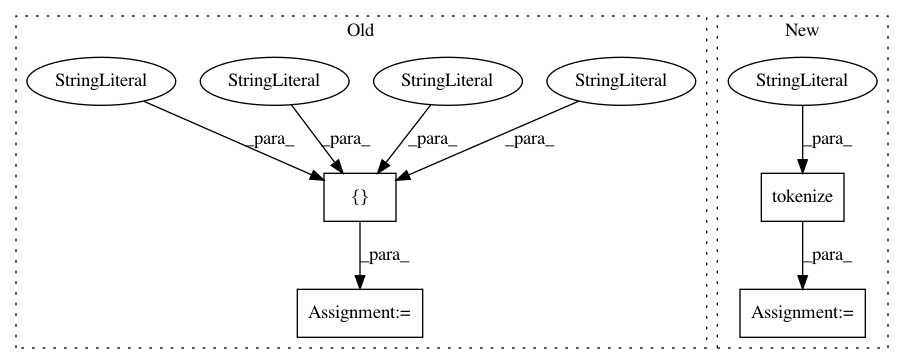

e7a4e436fc2032f64d96ac8ea5ea5a72ffab3cf0,snips_nlu/tests/test_feature_functions.py,TestFeatureFunctions,test_ngrams,#TestFeatureFunctions#,11
Before Change
class TestFeatureFunctions(unittest.TestCase):
def test_ngrams(self):
// Given
tokens = ["I", "love", "house", "music"]
ngrams = {
1: ["i", "love", "house", "music"],
2: ["i love", "love house", "house music", None],
3: ["i love house", "love house music", None, None]
After Change
class TestFeatureFunctions(unittest.TestCase):
def test_ngrams(self):
// Given
tokens = tokenize("I love house music")
ngrams = {
1: ["i", "love", "house", "music"],
2: ["i love", "love house", "house music", None],
3: ["i love house", "love house music", None, None]
In pattern: SUPERPATTERN
Frequency: 3
Non-data size: 4
Instances
Project Name: snipsco/snips-nlu
Commit Name: e7a4e436fc2032f64d96ac8ea5ea5a72ffab3cf0
Time: 2017-03-29
Author: clement.doumouro@snips.ai
File Name: snips_nlu/tests/test_feature_functions.py
Class Name: TestFeatureFunctions
Method Name: test_ngrams
Project Name: snipsco/snips-nlu
Commit Name: e7a4e436fc2032f64d96ac8ea5ea5a72ffab3cf0
Time: 2017-03-29
Author: clement.doumouro@snips.ai
File Name: snips_nlu/tests/test_feature_functions.py
Class Name: TestFeatureFunctions
Method Name: test_token_is_in
Project Name: snipsco/snips-nlu
Commit Name: e7a4e436fc2032f64d96ac8ea5ea5a72ffab3cf0
Time: 2017-03-29
Author: clement.doumouro@snips.ai
File Name: snips_nlu/tests/test_feature_functions.py
Class Name: TestFeatureFunctions
Method Name: test_ngrams_with_rare_word